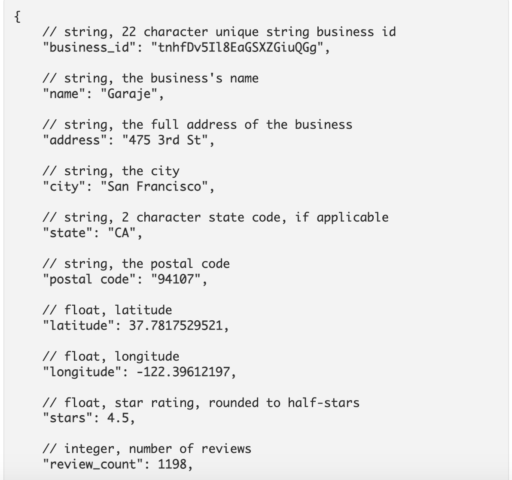
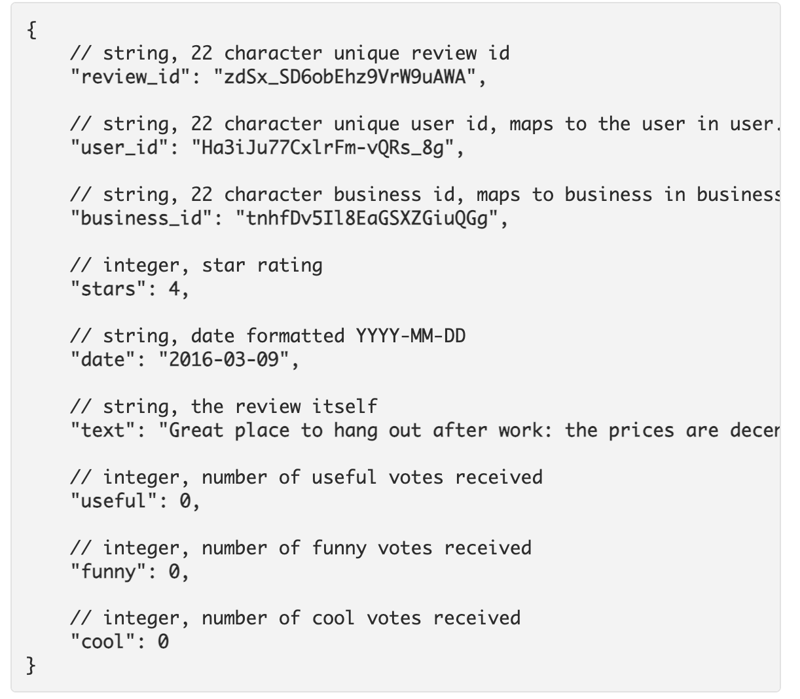
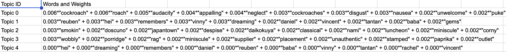
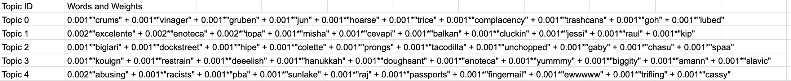
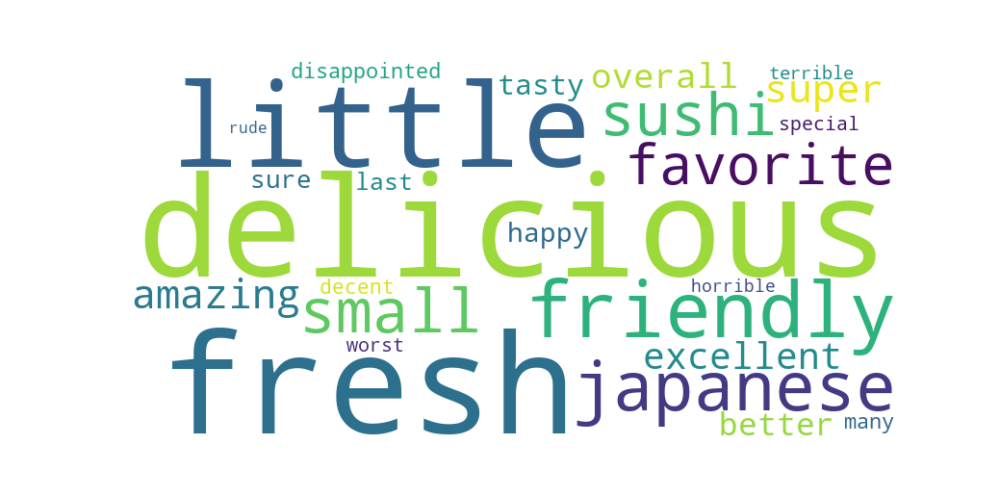
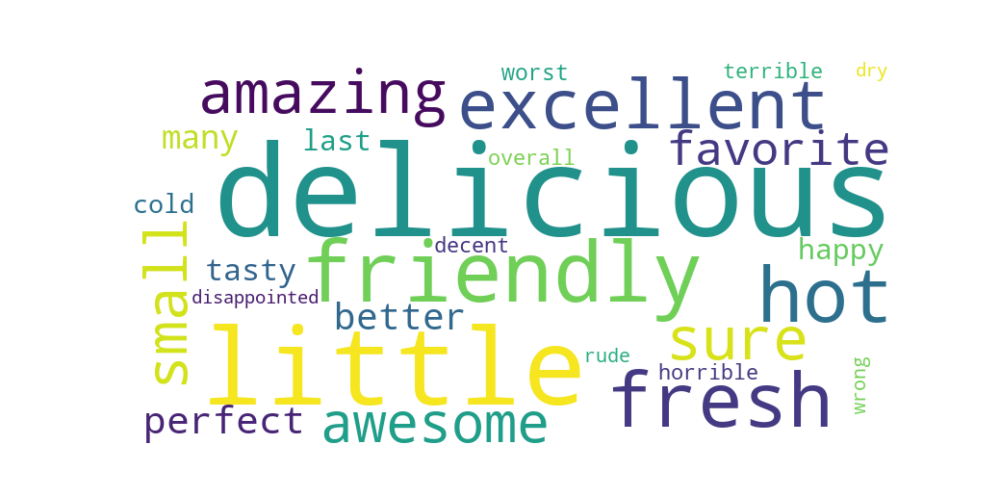

How does cuisine impact language used for reviews?
A cultural analysis by Ryan Lin and Noah Lian
Setup: Hypothesis and Goals
Our research will investigate how cuisine influences the type of adjectives and words that consumers use across four different cuisines: Chinese, American, Mexican, and Japanese . Our project has centered around the question of customers' expectations about various food cuisines. We ask the question:
How does cuisine impact the adjectives used for reviews?
We hypothesized that because of consumer biases, racial stereotypes will be reflected in both positive and negative Yelp reviews . This would be observed by specifically high use of adjectives to that target a certain cuisine. For example, racial biases might increase the use of certain words to discuss qualities of a business such as cost, taste of food, service and more. The goal of this project is to uncover these trends.
Code to this presentation and results can be found on Github and data at Yelp Open Dataset
Dataset Used: Yelp Open Dataset
Using Yelp as our main dataset for customer reviews in restaurants all over the country, we filtered data to include all restaurants with more than ten reviews into four separate categories: American, Chinese, Mexican, and Japanese restaurants. All other samples that did not fit in any of these categories were discarded. Despite cutting out restaurants that did not fit our criteria, we still wound up with a huge sample: 590,000 reviews for American restaurants, 52,000 for Chinese restaurants, 126,000 for Mexican restaurants, and 39,000 for Japanese restaurants, amounting to more than 800,000 reviews.
We used three main methods of analysis:
- Topic Modeling
- Top Adjectives
- TF-IDF Scores
Below are two examples of data given by Yelp, the left shows business.json and the right shows review.json
 Analysis 1: Topic Modeling
Our first method of analysis was topic modeling. Using the NLTK (Natural Language Tool Kit) in python, we first processed out stop words and filtered the data. Next we used Gensim's LDA (Latent Direchlet Allocation) model to do topic modeling. In short, an LDA is a supervised machine learning model that allows us to extract popular topics from a given corpus.
As we were obtaining the data, we discovered that the way in which we grouped our documents to create a corpus had a strong impact on the results of the model. We tried various groupings of documents, specifically grouping by review, rating, restaurant, and combinations of each, obtaining a different set of results each time we submitted the data. Despite obtaining a variety of varying results, we couldn’t find any extremely significant patterns. The most interesting result, however, came about by grouping documents by the rating in each cusine. Below you can see two examples of outputs of the topic model when grouping documents by review rating. The number associated represent the weight of the word.
Japanese Reviews
Mexican Reviews

Much of the results was filled with neutral words and food items, slang, or foreign language. In the Mexican results you can see the words “chipilon”, "yumm", "merrch", and “messikin.” This made it evident there was still unnecessary clutter in the data, but you can see some promising results in these. For example, Topic 0 in Japanese reviews talks about cockroaches and puke. Additionally the Topic 4 in Mexican reviews discusses racism, liars, and livid. Ideally, we would be able to attribute specific words that are used to describe specific cuisines. Below, we show results for topic modeling Chinese and American cuisines.
Chinese Reviews
American Reviews
Negative themes emerge when looking through the reviews collected for Chinese and American restaurants. For instance, in Topic 4 concerning Chinese cuisine, criticisms focus on poor service and location, describing the restaurant staff and venue as rude, disrespectful, and moldy. Interestingly, certain unusual words like "metropolitan," "fox," and "reuben" appear, seemingly out of place. This could be due to a significant number of poor reviews coming from restaurants that serve fusion food, a common practice in Chinese restaurants.
The prevalence of mentions of cockroaches and vomit across Chinese and Japanese cuisine topics suggests that the venues are not unkept well, with hygiene not being a priority. This is a serious concern as food poisoning due to unsanitary conditions could occur, and could lose the restaraunt business. Regardless, this did meet our hypothesis, as the common stereotype of labeling Asian restaurants and food as dirty is shown to be prevalent in these reviews. Notably, there is no topic that us strongly negative about cleanliness in either Mexican or American Topic Model results. Whether or not Chinese and Japanese restaraunts are simply more dirty than American and Mexican restaraunts, we do not know but is unlikely. Therefore, the prevalence of these topics of cleanliness in Asian cuisines does not quite confirm the presence of Asian stereotypes in cuisine reviews but it is a good sign of evidence for it. Additionally, results may be influenced by inherent biases of the Yelp Dataset and in this sense, jumping to strong conclusions should be avoided.
In American reviews, the validity of topic modeling is questionable due to the presence of many non-words or non-English terms. However, Topic 4 stands out for its exploration of negative terms such as "abusing," "racists," and "pba." References to "beer" and "racists" epitomize American stereotypes. While the data presents interesting insights, we found that topic modeling did not reveal sufficiently clear and decisive trends. Therefore, we pursued an alternative analysis method: examining top adjective counts.
Analysis 2: Top Adjectives
Top adjectives is simple. Instead of a complex machine learning algorithm, we can just search for the most frequent adjectives in each rating category. We thought this might be a more simple and intuitive way to search for racial stereotype biases.
We decide to search for all top adjectives. At first, we filtered out the data to get all adjectives, but when running the top adjectives algorithm, we got "good" as the overwhelmingly top used adjective for every rating across almost every cuisine. Therefore we decided to manually filter out non-descriptive words such as good, great, nice, much ... After running the model again, we got slightly more interesting results:
Chinese Top Adjectives
Mexican Top Adjectives
In our analysis of Top Adjectives results, we observed intriguing patterns in how customers mentioned the cuisine of restaurants in their reviews. The term 'Chinese' emerged as the most frequently used descriptor for food and service across all five ratings for Chinese restaurants, except in 5-star reviews where 'Chinese' was the second most common term, with 'Delicious' taking the top spot. Similarly, Mexican restaurants followed a comparable trend, with 'Mexican' either being the most or second most utilized term in customer reviews across all ratings.
Japanese Word Cloud
American Word Cloud
Reviews of Japanese restaurants frequently included the term 'Japanese' among the top 10 most used words across various ratings. Conversely, terms like "American" or "Western" were not prevalent descriptors for American cuisine in the reviews. Given that most of our sample was from American restaurants, it suggests that such terms may be considered redundant since Western and American food are often perceived as the norm in this context. However, this observation also underscores the phenomenon of 'othering' when discussing cuisines from cultures outside of America.
Another pattern we noticed from the Top Adjectives results is that, of all the various elements of a restaurant, the taste of the food seems to be the most important. Terms such as ‘delicious’ and ‘fresh’ were constantly used throughout all cuisines and all ratings, which was surprising to us. We imagined terms describing the restaurants’ cleanliness and customer service to be as frequent as terms describing the food. Admittedly, customer service is mentioned quite a bit, especially in the more extreme reviews (1 and 5-star ratings) with terms such as “rude” and “friendly,” but food was mentioned 2-4 times more than the other factors.
Not all graphs were included for brevity and results were fairly similar, but all graphs can be found here.
Top Adjectives again did not get enough descriptive words that we were searching for to confirm stereotype and biases in reviews, so we tried TF-IDF analysis.
Analysis 3: TF-IDF Analysis
TF-IDF analysis is a way of measuring the significance of each word by its TF (Term frequency) and IDF (Inverse Document Frequency) score. This method of analysis adjusts for the fact that some words appear more frequent than others. We thought that since Top-Adjectives was not able to capture our, perhaps TF-IDF scores would be able to capture more significant words about racial stereotypes.
TFIDF on All 4 Cuisines
1 Star Rating:
Above we show the top 10 TF-IDF scores for all four cuisines with rating 1. As you can see, the data is not super interesting. All the graphs share commonalities, in that the top words include, worst, last, terrible, horrible, and rude. Seemingly, for the most part, the graphs just confirm the language used to talk negatively in general.
The most notable trend again, is that the top word for Chinese cuisines in TF-IDF scores was "Chinese" and the second highest word for Mexican cuisine was "Mexican". Other than this, these results seem pretty inconclusive. Below we show the top 10 TF-IDF scores for the 5 star rating.
5 Star Rating:
In the 5 star-ratings for different cuisines, delicious was by far the most significant word. This shows the importnace of taste to reviews. For Mexican and Chinese cuisines, "Mexican" and "Chinese" were again very significant words. Service is also extremely important as "friendly" is a common top word for all restaraunts. Another notable point is that "authentic" is important in the top 10 TF-IDF scores for only the Mexican cuisine.
Overall, the TFIDF graphs did not get the information about stereotypes that we were searching for. We are searching for ways to better run our TF-IDF analyses.
Again, not all graphs were included for brevity because results were fairly similar, but all graphs for TFIDF analysis can be found here.
Conclusion
In conclusion, our initial data showed some promising patterns as we were able to identify possible implicit biases in commonly used customer critiques (cleanliness) for Chinese and Japanese restaurants. Additionally, we discovered the potential of ‘othering of businesses that sell products that are not American. With further cleaning and optimisation of the groupings, we would be able to find more conclusive data for our project.
In the future, we are specifically interested in pursuing the top adjectives model but grouping texts by subject, specifically cleanliness.
Since we got promising results from our topic model analyses that suggested Chinese and Japanese restaraunts were dirty,
we can try to explore this by quantifying top adjectives about cleanliness to better understand if this
bias truly exists. For example, we would like to see
what are all the top adjectives in only reviews about service or cleanliness. This will require more complex preprocessing and data filtering.
We recognize that this research is far from done, and plan to continue searchign for stereotypes!
TBD :)